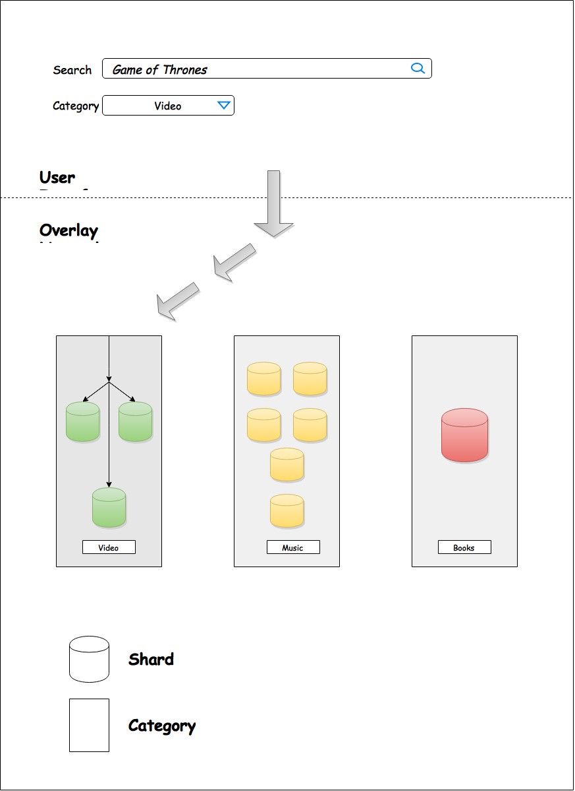
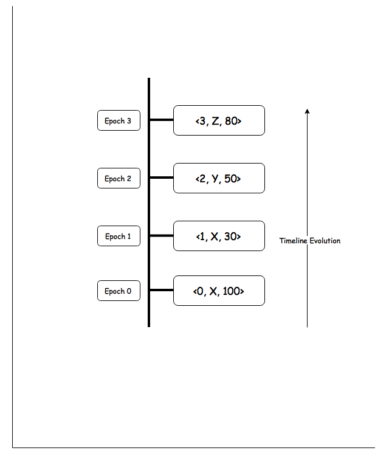
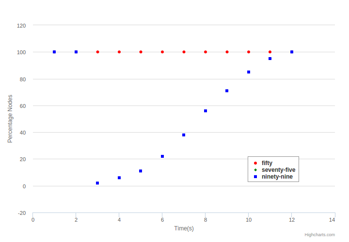
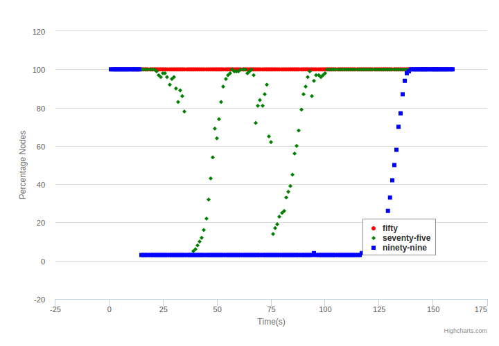
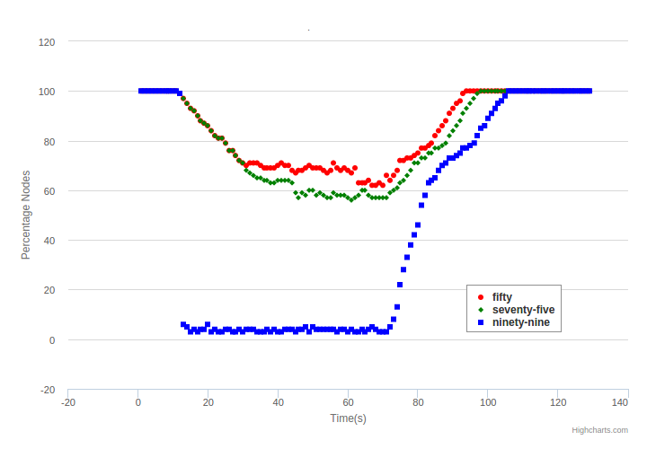
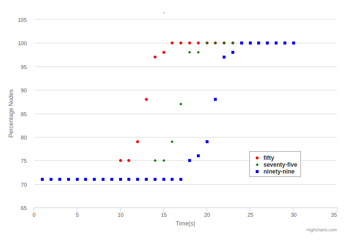

Sweep - Full Text Decentralized Search
Motivation
No Fully Decentralized Search System
Full Text Search Engine
Annoying Youtube Ads
Youtube managed to bypass Ad Blocker
Application Areas
Fast Dissemination of News
Music / Video Streaming Service
Common Interest Groups
System Model and Architecture
- Pull Protocol
- Entry Semantics
- Entry Dissemination
- Large Fanout
Architectural Overview

Pull Protocol
- Why Pull Protocol ?
- Peers always asking, What's next ?
- Pull from fixed number of nodes above in utility
- Verify and incorporate update ..
System Model (1 / 3)
Entry Semantics
- < epoch, leaderid, entryid >
- epoch - simple counter
- leaderid - node identifier
- entryid - entry identifier
- Helps in creating dense identifier space.
System Model (2 / 3)
Leader Unit
- Packet holding predefined max entries.
- Leader adds entries in a leader unit.
- < epoch, leaderid, number of entries >
- Max N entries can be added in leader unit.
- Leader performs unit switch by closing previous epoch.
System Model (3 / 3)
Timeline

- Never allow out of order addition of leader units.
Entry Dissemination
- Control Pull informs application about updated leader units.
- Application informs missing tracker about the update.
- Entry pull protocol gets initiated with the updated information.
Large Fanout
- Concept of latency variability
- Send request to more than one node in each shard.
- Prevent delay by Stragglers
- Collect responses in a separate lucene instance.
Overlay Network
- Preference Function
- Peer Sampling Service
- Gradient P2P Topology
Preference and Utility Function
- Higher Utility But Closer
- Utility Function to Provide Overall Order
- [ Group Membership > Replication Score > PeerScore > PeerId ]
Croupier - Peer Sampling Service
- Discover New Nodes
- Feed Samples to Gradient
Gradient P2P Topology
- Use the Preference Function to Determine Preferred Nodes
- Higher Utility Nodes Concentrated as Center
- Ranking Of Nodes with 0 at center (Leader)
- Individual Rank set by Looking at Neighbors and Adjusting Self
- Fingers to Nodes Above for Fast Dissemination
Leader Selection
- Combination of Paxos, Bully
- Selection Based on Utility
- Quickly Elect new Leader
- Leadership valid for predefined lease period
- Check for Better Utility Nodes for Fairness.
Election Leader
- Wait for n convergence rounds
- Reset Round if gradient view changes beyond predefined threshold.
if(!higherNodes && !leaderGroup && converged){
identifyLeaderGroupNodes();
startVoting();
}
Election Follower
- Reject Promise if already promised.
- Check Local Gradient for Higher Utility Nodes
- Set Promised = true in case no higher node found.
if(!alreadyPromised){
highestUtilityNode = getHighestUtilityNode();
boolean isLeaderGreater = compareWithLocalGreatestNode();
if(isLeaderGreater){
return promise;
}
else{
reject();
}
}
else{
reject();
}
Evaluations
- Convergence Time Experiment
- Add Entry Throughput
- Churn Experiment
- Flash Crowd
Convergence Experiment

- Stabilize system with 500 Nodes
- Add 1 entry / sec
Add Entry Throughput

- Initially 200 Nodes
- Add 1 entry / sec
Why 99% seems to be low ?
Why see - saw like structure ?
Churn Experiment

- 200 Nodes loaded with 100 entries
- Change In Nodes - 8 Nodes / Sec
- 1 entry / sec
Flash Crowd

- 200 Nodes
- Each Node having 100 Entries
- Flash Crowd Size - 80 Nodes